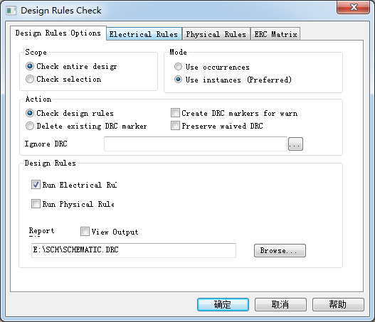
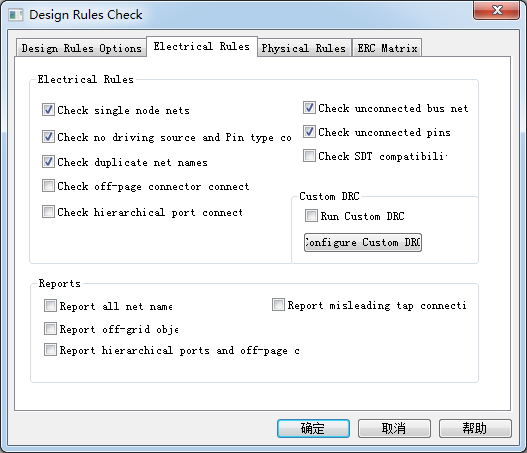
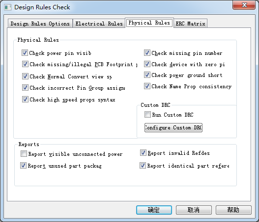
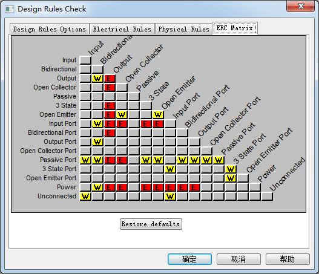

20160323
Tools
Annotate...
Back Annotate...
Update Properties...
Test Bench
Part Manager
Design Rules Check(设计规则检查)
Design Rules Options(设计规则选项)

Scope
Check entire design : DRC检查整个工程
Check Selection : 仅对选择的文件进行DRC检查
Mode :
Use occurrences 选择所有事件
Use instances(preferred)使用当前实体（建议）
（所谓实体是指放在绘图页内的元件符号，而事件指的是在绘图页内同一实体出现多次的实体电路。
例如，在复杂层次电路图中，某个子方块电路重复使用了3次，就形成了3次事件；不过子方块电路内本身的元件却是实体）
Action
Check design rules 进行DRC检查
Delete existing DRC marker 删除DRC检测标志
Create DRC markers for warnings : 进行DRC检测若发现错误，在错误之处放置警告标志
Preserve waived DRC 保留已经豁免的DRC
Design Rules
Run Electrical Rules 电气规则检查
Run Physical Rules 物理规则检查
Electrical Rules

Electrical Rules :
Check off-page connector connection : 检测分页图纸间接口的连接性
Check hierarchical port connection : 检测阶层端口的连接性
Check SDT compatibility : 检测对于SDT文件的兼容性
Reports
Report all net name : 报告所有网络名称
Report off-grid objects : 报告未放置在格点上的器件
Report hierarchical ports and off-page connection : 报告阶层端口和分页图纸间接口的连接
Report Misleading Tap Connection : 报告易误解的连接
Physical Rules

Reports
Check visible unconnected power : 检测未连接的可见电源
Report invalid Refdes : 报告无效的参考编号
Report identical part references : 报告是否有重复的器件序号
ERCMatrix

Create Differential Pair...
Cross Reference...
InterSheet Reference...
Bill of Materials
Header
Item\tQuantity\tReference\tPart
序号 用量 位号 值
Combined property string
{Item}\t{Quantity}\t{Reference}\t{Value}
Combined property string 这个框框里填写的就是下面的器件所具有的属性的名称。
也就是说，如果你想导出Part Number这项参数，那么你就需要把{PART_NUMBER}这串字符填写到Combined property string中；
如果你想导出Description这项参数，就需要把{Description}这串字符填写到Combined property string中，
不同的字符串用\t隔开就OK了。 相信到现在，你应该知道如何随心所欲到处自己想要的参数了吧。
例如采用下面的导出设置：
Header: Item\tQuantity\tValue\tPart Number\tReference\tDescription\tDNS\tVendor\tVendor Part Number
Combined property string:
{Item}\t{Quantity}\t{Value}\t{PART_NUMBER}\t{Part Reference}\t{Description}\t{DNS}\t{Vendor}\t{Vendor P/N}
就可以导出数量，元件值，料号，元件编号，元件描述，是否为 DNS，厂商，厂商料号这些信息
常用的是如下方式：
{Item}\t{Quantity}\t{Reference}\t{Value}\t{pcb footprint}\t{Quantity}\t\t
Tools > Bill of Materials...
Header
Item\tQuantity\tReference\tPart\tfootprint
Combined property string
{Item}\t{Quantity}\t{Reference}\t{Value}\t{pcb footprint}
Export Properties...
Import Properties
Generate Part
Export FPGA...
Split Part
Assign Power Pins...
Associate PSpice Model...
Sync NetGroup...
Customize...
Board Simulation...